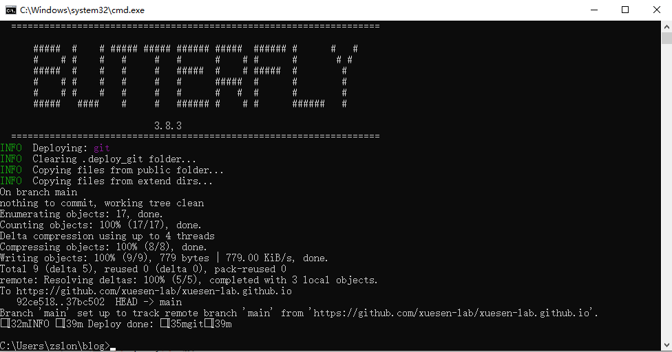
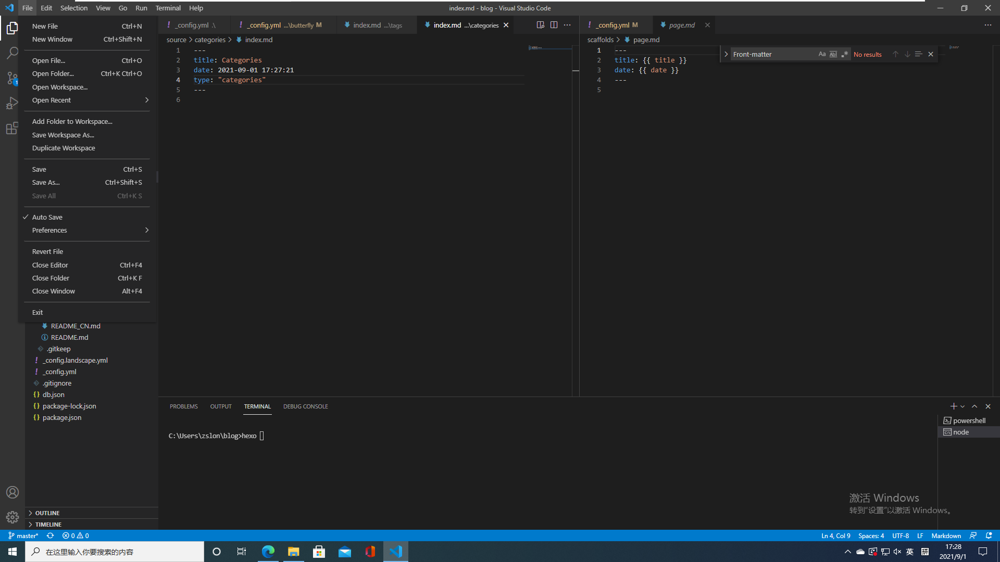

Lab09-个人网站教程
本篇博客是一篇个人博客的教程，面向未系统学习过计算机知识的同学们~
介绍
网站
网站，也就是我们日常所见到的浏览器中的网页，百度，谷歌（谷歌需要代理/VPN才能访问），哔哩哔哩，等等。网站一般由前端和后端构成，但后端并不是必须的，也有的网站只有前端。
前端：简单来说是我们看到的内容。比如你打开一个百度，你看到百度的熊爪和搜索框，这部分内容都是展示给你的交互界面，也就是前端。前端主要负责的功能是展示数据，前端工程师需要想尽方法让用户更好的理解数据，并且尽可能的吸引用户（停留、点击等等）
后端：当我们通过百度搜索
上海交通大学时，实际上是后端帮我们在数据库中进行了搜索，然后返回给前端，前端展示给我们。后端不会直接运行在浏览器中，而是运行在服务器中。比如百度的后端就运行在百度的服务器中，它的功能可以理解为 —— 一个不断运行等待用户请求的程序。
前端和后端的工程师通过协商约定交互的形式，比如
前端：嘿，兄弟，给我和“上海交通大学”最相关的网页的1~20条
后端：好的，我找一下。诺，给你！
前端：嘿，兄弟，帮我验证一下这个用户的名字和密码是不是匹配的
后端：好的，我查一下。不匹配！
前端和后端一般通过 HTTP 协议进行交互，当然也有通过 Websocket 等协议进行交互的。当一个人在浏览器里输入了一个网址，比如www.baidu.com，浏览器首先会去百度的服务器获取主页等静态的资源文件，然后将网页绘制在浏览器上，呈现在屏幕里。（在浏览器里输入的 https://www.baidu.com 实际上是对百度服务器的一个GET请求，浏览器里输入的http请求默认都是GET请求）当浏览器将百度的主页展示在屏幕上后，你就可以在输入框中进行相应的输入，进行查找。当你按下Enter键（或者点击搜索），前端的代码就会将你输入的关键词传给后端，一般也是通过 HTTP 协议，当然也有通过其他协议的。后端接收到请求后将查找得到的数据返回给前端。前端拿到数据后再展示新的页面给你，于是你就看到了几十条相关的网页~。
个人网站
个人网站是网站的一种，顾名思义，个人网站的功能主要是展示个人的信息，比如思考、文章、随笔等等。个人网站（博客）有很多种选择方式，比如使用csdn、知乎等平台提供的博客/富文本服务，也可以自己手动搭建一个平台然后提供富文本文章服务。前者比较简单，但是不够个性化，能够定制化的程度低；后者定制化程度高，可以更好的展现个性，可以随心所欲的进行排版，增加/删除功能，但是部署也更加繁琐困难。
手动搭建一个平台来部署个人博客网站，首先你需要一个服务器（可以理解为电脑/主机，区别只是服务器一般没有可视化界面，是专为高性能、长期运行的应用服务的）。当你有个服务器之后，就可以将你的程序运行在这个服务器之上（和在你的笔记本上运行一个python程序没有多少区别）。当你成功运行这个程序之后，如果你的服务器可以被外界访问（拥有公网IP）外界的主机就可以通过约定的协议访问你的程序。比如你HTTP协议的程序，外界就可以使用HTTP协议进行交互。
Part1. 基于github的静态个人博客网站
本部分教程会教大家利用 github 服务器搭建一个静态的个人博客网站，所谓静态，也就是没有后端，只有前端（html、js、css），如果你不懂前端，不要担心，本方法不需要了解前端的知识。
github
github是全球最大的代码托管平台，是程序员们进行友好交流的平台。全球有不计其数的程序员在github上合作开发项目，如果未来你打算修读和计算机相关的专业，那么github是你绕不开的一个网站（每年的作业都在上面找答案 orz）
第一步. 创建github账号


按照相关要求，填写好资料后，就会来到github的个人主页，如下图所示
第二步. 创建一个 repository，repository 可以理解为github的文件夹，里面存放有你的文件等等。

按照下图的方式为 repository 命名（命名格式为<你的username>.github.io），比如下图的username是xuesen-lab，那么repository的命名应该为
xuesen-lab.github.io（图片中因为我已经创建过该repository，所以会提示冲突）
安装必备工具
安装 nodeJS
访问 https://nodejs.org/en/ 网站并下载 LTS 版本的node，具体的安装过程可以参考视频，基本上都是选择默认的选项就可以了。

安装 git
访问 https://git-scm.com/ 网站并下载git，具体的安装过程可以参考视频，注意建议在默认分支选项选择 main。
安装 hexo-cli 和 hexo-deployer-git
安装完 node 和 git之后，如果可以建议安装 Visual Studio Code（不安装也可以，看个人选择）
重点来了，现在我们需要利用之前安装的 node 和 git 安装 hexo（博客模板，hexo可以将markdown格式的文档转化成静态资源的网页）本篇教程就是利用hexo进行部署的~
打开cmd，创建一个博客目录，如何在命令行中创建目录或者文件请参考视频~ 切换到博客目录，然后输入
npm i -g hexo-cli安装相应的 hexo 工具
安装完成之后，输入
hexo init来创建 hexo 项目如果不出意外，
hexo init将会输出一下图片中的内容（注意，截图中的blog路径其实不一样，这是因为我已经init一遍了，所以下面的截图是在新的目录下进行的init，大家直接在自己想要存放博客的目录下面init就好啦~）：
查看我们的 blog 目录，可以看到该目录下面已经有了一部分的文件：
下面我将一一解释这个目录的结构
1
2
3
4
5
6
7
8
9C:\Users\zslon\Desktop\blog
├── node_modules // hexo的依赖库，我们不需要知道其中的细节
├── package-lock.json // hexo的依赖描述文件（lock的意思是会将上次构建的依赖的地址都保存下来，可以确保两次构建完全一致）
├── package.json // hexo的依赖描述文件
├── scaffolds // hexo的模板文件，新生成一个文档的时候会根据相应的模板
├── source // 文档源文件，我们编写的文档都存放在这个里面
├── themes // 主题文件夹，美化hexo，更换主题用到
├── _config.landscape.yml // hexo默认主题landscape的配置文件
└── _config.yml // hexo的根配置文件之后我们需要安装
hexo-deployer-git1
npm install hexo-deployer-git
使用 hexo
安装好hexo之后，我们可以查看一下hexo的相关命令
1
hexo help
不出意外的话，命令行应该会输出一下信息~
INFO Validating config
Usage: hexoCommands:
clean Remove generated files and cache.
config Get or set configurations.
deploy Deploy your website.
generate Generate static files.
help Get help on a command.
init Create a new Hexo folder.
list List the information of the site
migrate Migrate your site from other system to Hexo.
new Create a new post.
publish Moves a draft post from _drafts to _posts folder.
render Render files with renderer plugins.
server Start the server.
version Display version information.Global Options:
–config Specify config file instead of using _config.yml
–cwd Specify the CWD
–debug Display all verbose messages in the terminal
–draft Display draft posts
–safe Disable all plugins and scripts
–silent Hide output on consoleFor more help, you can use ‘hexo help [command]’ for the detailed information
or you can check the docs: http://hexo.io/docs/我们最主要使用到的命令有以下几个，正如上面的输入中告诉我们的，这几个命令的作用也都很简单
hexo new—— 创建一个新的文档，将会在source目录中生成一个新的markdown文件1
hexo new "New Post" # 将会创建一个 New Post.md 的文件
hexo generate—— 从mardkown文件生成静态html/js/css文件hexo server—— 运行一个本地的 webserver，可以从本机的浏览器中访问这个 webserverhexo deploy—— 将生成的静态 html/js/css 文件部署到对应的服务器上
编写第一篇博客并发布
现在我们已经成功安装了hexo，在博客根目录，输入 hexo new "About me" 来创建一个新的文档。
可以看到，cmd 中的输出告诉我们已经成功创建了 \Desktop\blog\source\_posts\About-me.md，接下来，让我们打开这个文件进行编辑吧。
打开文件有两种方式
直接在 cmd 中输入
cd source\_posts，切换到对应目录后，输入code .，此时将会打开vscode，并且在vscode的左侧文件栏中会显示_posts目录的内容。在资源管理器中打开对应文件。我们打开windows的资源管理器，然后打开对应的
source\_posts目录，此时我们应该能看到About-me.md文件。鼠标右击文件，选择用vscode打开（如果你有Typora或者其他专业的markdown编辑器也可以使用这类编辑器编辑）
打开文件后，我们需要编辑文件，我们先尝试在文件中输入以下内容：
1 | Hello, everyone~ My name is Xuesen-lab. I am a student from ShangHai, China. This is my blog. |
在之前的教程中已经提到过，hexo使用markdown进行编辑，markdown格式的要求这里就不过多介绍，在上面的Post内容中已经有了最基础的markdown格式介绍，如果对markdown格式还有疑问，可以联系助教或者上网查一下~
博客编写好之后确保保存（vscode默认是不会自动保存的）
随后，在博客根目录里，我们输入hexo generate，hexo就会将我们的About-me.md转化成对应的网页文件，如下图所示：
生成静态文件之后，我们可以使用 hexo 启动一个本地 webserver，并通过浏览器访问本地的4000端口（暂时不理解的话没关系~可以忽略端口这个词）
打开浏览器之后，访问 localhost:4000 ，不出意外的话将会看到下面的内容：
以上都没问题后，我们就要开始尝试将博客部署到 github 的服务器上，这样我们就能通过互联网访问到我们的博客~
在博客根目录找到_config.yaml文件，文件内容如下图所示：
将_config.yaml的内容拉到最底部，找到deploy条目，按下图所示进行编辑：
其中 reposity 可以在 github 页面内进行复制
但是注意，末尾的.git需要删除（也许不删除也没事，但是我没试过）
一切都做好之后，就可以在博客根目录中输入 hexo deploy ，这一步可能会卡住，如果出现卡住或者输出fatal error的情况，请参考FAQ节的第一条无法访问github.com设置代理~

其中最重要的是remote: Resolving deltas: 100%(5/5)，这句表明我们已经成功将本地的修改 push 到 github 的服务器中啦，接下来就让我们查看一下我们的博客⑧~
在浏览器输入https://username.github.io，注意username 应该是你注册 github 的用户名，username.github.io是你的 repository 的名字~ 比如在本教程中我用的用户名就是xuesen-lab，那么这里应该输入https://xuesen-lab.github.io，输入完成后按下回车，不出意外的话应该会显示如下的画面：
至此，你已经完成了大部分的工作，真棒！
美化你的博客，更换主题！
虽然我们已经成功部署了我们的个人博客网站，但是现在的博客看起来并不好看，我们需要尽可能的美化它，最简单的方式就是直接更换主题。在github上有很多 hexo 的主题可以供我们选择，我们可以通过搜索hexo 最好看的主题，hexo 主题等关键词来找到我们想要的主题，每种主题的配置方式可能不一样，具体的主题需要参考具体主题的文档~
我们在百度/google搜索hexo 主题，打开这个页面，https://hexo.io/themes/
这里，我教大家使用一种比较流行的主题 —— Butterfly，其余的主题请大家自己尝试~
我们找到 Butterfly 的快速开始教程，按照教程中的步骤修改我们的博客~
在博客根目录的cmd中输入
git clone -b master https://github.com/jerryc127/hexo-theme-butterfly.git themes/butterfly这条命令将会在
themes目录下创建butterfly目录并且将butterfly的依赖文件下载下来，命令执行结果如下图所示
应用主题，打开博客根目录的
_config.yaml文件，将其中的theme: landscape改为theme: butterfly安装相应的插件。在博客根目录里，输入
npm install hexo-renderer-pug hexo-renderer-stylus --save命令执行结果如下图所示
一切完成之后，输入 hexo generate，随后 hexo deploy，成功部署之后，在浏览器里打开 https://xuesen-lab.github.io（请换成你的个人博客~）查看一下效果吧！（由于缓存和延迟，可能会有一些情况没有应用好主题，可以稍等一两分钟或者关闭浏览器重新打开再访问网站）
修改网站配置，让它成为你的私人定制！
我们已经成功部署了个人网站并且成功更换了主题，但是很明显，我们的个人网站现在还是用的模板默认的信息，接下来我们将会修改模板的配置，使得网站更加符合我们自己~
修改个人信息
打开根目录下的
_config.yaml文件，找到author相关条目，进行如下的修改：1
2
3
4
5
6title: 你的网站标题，显示在网页标签，Butterfly主题下也会显示在首页
subtitle: 副标题，会显示在网页标签里（不同的主题可能处理不太一样）
description: 相当于个性签名
author: 你的名字
language: 网站的语言，中文使用 zh-CN
timezone: 时区，中国用户使用 Asia/Shanghai
效果展示：
接下来，我们修改个人头像，在 themes/butterfly/_config.yaml 找到 avatar 栏目，将其中的内容改为下图所示：

在source目录下创建 img 目录，然后将 favicon.png 和 avatar.jpg 放在这个目录里（具体的图片请自己上网搜索，注意图片后缀名请以你的图片为准，不一定要和图中一致）
效果如下所示
修改主页导航栏
我们目前的主页导航栏内容比较少，可以通过添加导航栏的方式，丰富我们的主页。
修改
themes/butterfly/_config.yaml的 menu 条目，取消 menu 条目下的注释创建 tags 页面
在博客根目录输入
hexo new page tags创建新的 tags 页面，这条命令将会创建source/tags/index.md文件1
hexo new page tags
打开
~\blog\source\tags\index.md文档，修改成如下图所示部署后，访问 tags 网页的效果如下：
创建 categories 页面
和创建 tags 页面类似，创建 categories 页面首先需要输入命令
hexo new page categories，这条命令也会创建一个source/categories/index.md文件1
hexo new page categories
打开
~\blog\source\categories\index.md文档，修改成如下图所示：部署后，访问 categories 网页的效果如下：
创建 link 页面
在博客根目录输入
hexo new page link，完成后会创建文件source/link/index.md1
hexo new page link
打开
~\blog\source\link\index.md文档，修改成如下图所示：之后，我们需要添加友情链接
首先创建
source\_data目录在
source\_data目录下创建link.yaml文件修改
link.yaml文件成如下如所示
访问首页中的 link 页面，效果如下所示：
创建 about 页面
和之前的一样，首先输入
hexo new page about来创建source\about\index.md文件1
hexo new page about
将
source\about\index.md文件修改成下图所示：
访问首页的 about 页面，效果如下图所示：
修改主页图片
打开
themes\butterfly\_config.yaml，找到index_img条目，将该条目设置成你的图片（不要忘记复制到source/img目录中）效果展示：
定制文章
打开
themes\butterfly\_config.yaml，找到cover条目，其中的主要配置如下：1
2
3
4
5
6
7
8
9
10
11
12cover:
# display the cover or not (是否顯示文章封面)
index_enable: true
aside_enable: true
archives_enable: true
# the position of cover in home page (封面顯示的位置)
# left/right/both
position: both
# When cover is not set, the default cover is displayed (當沒有設置cover時，默認的封面顯示)
default_cover: /img/default_cover.jpg # 注意要在 source\img\目录下要有该图片
# - https://i.loli.net/2020/05/01/gkihqEjXxJ5UZ1C.jpg修改 post 模板，打开
scaffolds\post.md，修改成如下配置1
2
3
4
5
6
7
8
9
10
11
12
13
14
15
16
title: {{ title }}
date: {{ date }}
tags:
categories:
keywords:
description:
top_img:
cover:
toc: true
copyright: true
copyright_author:
copyright_author_href:
copyright_url:
copyright_info:修改好之后，我们使用
hexo new "test"来创建一个测试文档，这将会在source\_posts目录下生成一个test.md，打开test.md输入以下的内容：1
2
3
4
5
6
7
8
9
10
11
12
13
14
15
16
17
18
19
20
21
22---
title: test
toc: true
date: 2021-09-01 20:31:18
tags:
- test
categories:
- test
keywords:
- 测试
- 学森课程
description: 这是一个学森课程的测试文档
top_img: /img/default_cover.jpg
cover: /img/default_cover.jpg
copyright: true
copyright_author: xuesen
copyright_author_href: https://xuesen-lab.github.io
copyright_url:
copyright_info: 学森课程版权所有
---
这是一个测试文档最后，我们输入以下命令，来发布我们的文章~
1
2
3hexo clean
hexo g
hexo d最终效果：
FAQ
无法访问 github.com
按照视频的教程，下载 代理.zip，解压缩之后，双击
v2rayN.exe，之后在浏览器里打开https://www.google.com测试一下代理是否正常运行。运行代理之后，在 cmd 中还是无法放问 github，需要输入
set https_proxy=http://127.0.0.1:10809，之后才能正常在 cmd 中访问githubvscode 设置自动保存

在 cmd 中输入 code . 报错
这是因为你没有安装 vscode，如果不懂的话建议按照下载一下 vscode，安装之后重启 cmd 就好
deploy的时候报以下错误（会提示RUN: git config –global user.name “Your Name”）

这是因为你没有设置 git，这个我在视频里没有体现出来，是我的问题，但是这一步大家可以看提示，提示说可以运行以下两条命令
1
2git config --global user.email "xxxx@gmail.com" # 请将"xxxx@gmail.com"换成你注册 github 的邮箱
git config --global user.name "xxxx" # 请将“xxxx”换成你注册 github 的用户名成功输入以上两条命令后就可以正常 deploy 啦